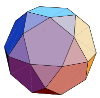
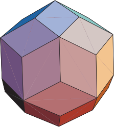

Quasiregular Convex Uniform
Text.
-
Archimedean solids
The Archimedean solids are a set of 13 polyhedra described by Pappus of Alexandria around 340 AD, who attributed them to the ancient Greek mathematician Archimedes (287-212 BC). Archimedes' own writings on the subject have been lost. Examining these 13 solids, it can be seen that each is a convex polyhedron whose faces are regular polygons of two or more types that meet in the same pattern around each vertex. It can also be seen that each has polyhedral group (tetrahedral, octahedral, or icosahedral) rotational symmetry. These 13 solids are the only polyhedra possessing both of these traits.
-
Catalan solids
The Catalan solids are the duals of the Archimedean solids. They are named after the Belgian mathematician Eugene Catalan (1814-1894) who first described the complete set in 1865. The Rhombic Dodecahedron and Rhombic Triacontahedron were described in 1611 by Johannes Kepler. Each Catalan solid has one type of face and a constant dihedral angle, and it possesses the same symmetry as its Archimedean dual.